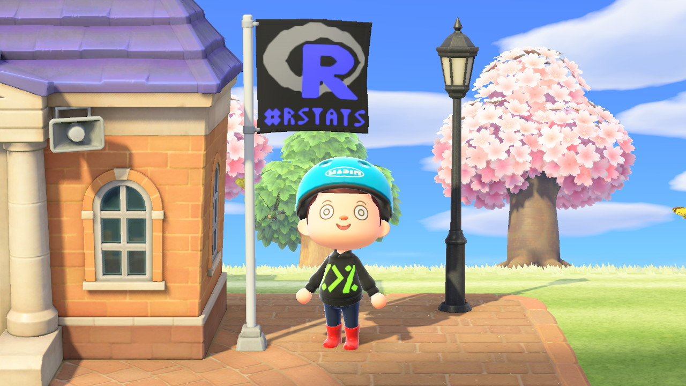
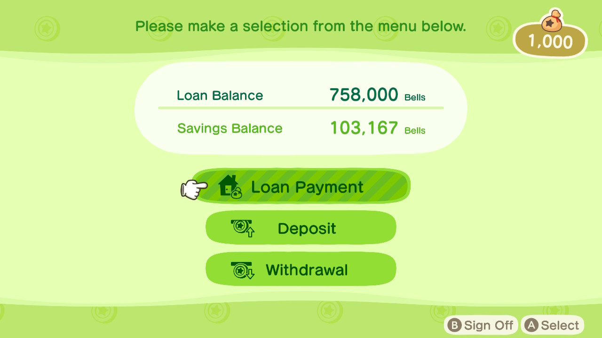
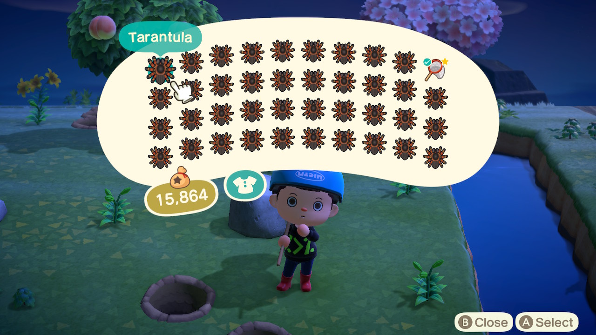

# Load packages
library(R6) # install.packages("R6")
library(emo) # remotes::install_github("hadley/emo")
# Build the class
AutomaticBellDispenser <- R6Class(
"AutomaticBellDispenser", # class name
list(
# set initial values for fields
savings = 0, # start from zero
loan = 2498000, # loan size
# show on startup the account status and options
initialize = function(...) {
loan_formatted <- format( # reformat the loan field value
self$loan, # the 'loan' field from this class (i.e. 'itself')
big.mark = ",", # format as '1,000' rather than '1000'
scientific = FALSE # prevent 12000000 being displayed as '1.2e+07'
)
savings_formatted <- format( # reformat the savings field value
self$savings, big.mark = ",", scientific = FALSE
)
cat("Automatic Bell Dispenser (ABD)\n\n") # cat() prints to console
cat(emo::ji("bell"), "Loan Balance:", loan_formatted, "Bells\n")
cat(emo::ji("pig2"), "Savings Balance:", savings_formatted, "Bells\n\n")
cat(
"Please make a selection from the menu below\n\n",
emo::ji("house"), "loan_payment()\n",
emo::ji("arrow_up"), "deposit()\n",
emo::ji("arrow_down"), "withdraw()"
)
},
# method to deposit an amount into savings
deposit = function(amount = 0) { # function takes an amount to deposit
amount_int <- as.integer(amount) # round to nearest lowest integer
if (amount - amount_int > 0) { # warning if rounding has occurred
warning(
"Deposit rounded to ", amount_int, " Bells.\n",
call. = FALSE # prevents printing of the error-causing line
)
} else {
self$savings <- self$savings + amount_int # add amount to savings
}
invisible(self) # return but don't print
},
# function to withdraw an amount from savings
withdraw = function(amount = 0) {
amount_int <- as.integer(amount) # round to nearest lowest integer
if (amount - amount_int > 0) { # warning if rounding has occurred
warning("Withdrawal rounded to ", amount_int, " Bells.\n", call. = FALSE)
}
if (self$savings - amount_int < 0) {
warning( # can't withdraw more than you have so warn and take max
"Withdrew all savings: ", self$savings, " Bells.\n", call. = FALSE
)
self$savings <- 0
} else { # otherwise subtract amount from your savings
self$savings <- self$savings - amount_int
}
invisible(self) # return but don't print
},
# function to make loan payment from savings
loan_payment = function(amount = 0, full_amount = FALSE) {
if (self$loan == 0) { # stop if the loan has already been paid in full
stop("You already finished paying your loan!\n", call. = FALSE)
}
amount_int <- as.integer(amount) # round to nearest lowest integer
if (amount - amount_int > 0) { # warning if rounding has occurred
warning("Payment rounded to ", amount_int, " Bells.\n", call. = FALSE)
}
if (full_amount == TRUE) { # choose to pay with everything in savings
self$loan <- self$loan - self$savings # reduce loan by savings amount
self$savings <- 0 # remove all savings
} else if (self$savings - amount_int < 0) {
warning( # can't pay more than total savings, so warn and pay max
"Paid total amount from savings instead: ", self$savings, " Bells.\n",
call. = FALSE
)
self$loan <- self$loan - self$savings # subtract total savings
self$savings <- 0 # all savings used for this repayment
} else if (self$loan - amount_int < 0) {
warning( # can't pay more than remaining loan, warn and pay remaining
"Paid total remaining loan instead: ", self$loan, " Bells.\n",
call. = FALSE
)
self$loan <- 0 # loan paid in full
self$savings <- amount_int - self$loan # excess back into savings
} else { # otherwise just remove the amount from the savings and loan
self$savings <- self$savings - amount_int
self$loan <- self$loan - amount_int
}
if (self$loan == 0) { # when the loan is totally cleared
cat(
emo::ji("smiley"),
"Sweet! I finally finished paying off my very last home loan!",
emo::ji("tada"), "\n\n"
)
}
invisible(self) # return but don't print
},
# Print method wen calling the name of an object with this class
# (Content matches the initialise method)
print = function(...) {
loan_formatted <- format(self$loan, big.mark = ",", scientific = FALSE)
savings_formatted <- format(
self$savings, big.mark = ",", scientific = FALSE
)
cat("Automatic Bell Dispenser (ABD)\n\n")
cat(emo::ji("bell"), "Loan Balance:", loan_formatted, "Bells\n")
cat(emo::ji("pig2"), "Savings Balance:", savings_formatted, "Bells\n\n")
cat(
"Please make a selection from the menu below\n\n",
emo::ji("house"), "loan_payment()\n",
emo::ji("arrow_up"), "deposit()\n",
emo::ji("arrow_down"), "withdraw()"
)
}
)
)
tl;dr
How would capitalist raccoon-dog Tom Nook simulate home-loan payments using R?1
I built a version of Animal Crossing’s Automatic Bell Dispenser (a kind of ATM/cashpoint) using Winston Chang’s {R6} package, inspired by an exercise from Hadley Wickham’s Advanced R book.
What do those words mean?
Animal Crossing
Animal Crossing is a wholesome Nintendo videogame franchise in which you arrive on an island and befriend anthropomorphic animal villagers. You can catch insects and fish, design clothes, fill a museum with fossils, develop the infrastructure of the island and interact with other players. It’s pretty chill.2 The latest version, New Horizons, was recently released.3
Tom Nook
Tom Nook is a tanuki. Depending on who you ask, he’s either a maniacal rip-off merchant,4 or a misunderstood chap who gives you several interest-free home loans with no obligation.
Automatic Bell Dispenser
The in-game currency is Bells, which can be gained by selling things, helping residents, hitting rocks with a spade and joining the ‘stalk market’ by buying and flipping turnips. You use an Automatic Bell Dispenser to deposit, withdraw and make loan payments.
R6
R is primarily a function-focused language: mostly you’re writing functions that output objects.
But there’s also Object-Oriented Programming (OOP), which is common in many other languages. OOP brings together values (fields) and functions (methods) into classes. You can interact with a class via its methods, which may trigger further internal methods and update the values. You can also create subclasses that add to or amend the logic of its parent.
You may have heard of the object-oriented systems S3 and S4 in R; R6 provides another, newer implementation of OOP. There are two important things to know about R6 objects. To simplify, they’re:
- encapsulated, meaning that you apply the methods to object directly, like
object$some_method() - mutable, meaning that fields are updated as you apply the methods
I’m not going into depth about OOP and R6 here. For more, I recommend:
- the {R6} introduction vignette by Winston Chang
- a chapter in Advanced R by Hadley Wickham5
- the article ‘How to explain OOP concepts to a 6-year-old’ by Alexander Petkov of freeCodeCamp
A really intriguing and illustrative use-case of R6 is Giora Simonchi‘s Castle of R, which is a text adventure game for R (!). Here, classes are things like ’room’ and ‘door’ that have specific properties and actions you can take on them. As you play, the fields are modified depending on your location, interactions you’ve had, or items you’re carrying.
Demo
The R6 chapter of the Advanced R book has an exercise about building a bank account class.
Inspired by this, I’ve built an AutomaticBellDispenser class with certain fields (savings and loan values) and methods (deposit(), withdraw() and loan_payment() functions) that mimic the functionality of an Automatic Bell Dispenser. 6

You can click below to expand the code, but it may be a lot to take in at once. Skip ahead to the next section to see examples of its use and then some explanations of specific bits of the code.
Click to expand the full AutomaticBellDispenser class.
Use the class
How can you use this class? I’ll explain below how to:
- start a new instance of the class
- use the
deposit()method to increase the value of thesavingsfield - use the
withdraw()method to decrease thesavingsfield - use the
pay_loan()method to decrease the value of theloanfield
Initialise
You can start, or ‘initialise’, an instance of the class by calling new() on the class name and assigning it. I’ve called my object account.
account <- AutomaticBellDispenser$new()Automatic Bell Dispenser (ABD)
🔔 Loan Balance: 2,498,000 Bells
🐖 Savings Balance: 0 Bells
Please make a selection from the menu below
🏠 loan_payment()
⬆️ deposit()
⬇️ withdraw()Initialising the class also triggers the printing of the current account details and instructions. This mimics the interface you see on the Automatic Bell Dispenser in-game.
In this case, you can see that we have zero savings, but a multi-million loan to pay off (!). This value represents the final loan amount that Nook sets you in the game.7
Make a deposit
Now we can make a deposit to our account. Use $ notation to say ‘to the account object apply the deposit method’. In this case, the value supplied to deposit is the amount of Bells.
account$deposit(1000)
account # check status of accountAutomatic Bell Dispenser (ABD)
🔔 Loan Balance: 2,498,000 Bells
🐖 Savings Balance: 1,000 Bells
Please make a selection from the menu below
🏠 loan_payment()
⬆️ deposit()
⬇️ withdraw()You could also access the savings field directly from the account object:
account$savings[1] 1000So we now have savings of 1000 Bells! Of course, I just made up that value. I could add as much as I want. Use your imagination!
In the game you have to complete various tasks to add money to your pocket. You can then deposit from your pocket into your savings. I haven’t created the concept of ‘pockets’ in this demo, but you could create a pocket class. You could also, for example, create a fish class with subclasses for each species, including their trade value. You could, in theory, mimic the entirety of Animal Crossing in this way.
Withdraw and pay loan
We can also withdraw Bells and make loan payments with this class.
Note that you can chain method calls together with $ between them, so we could withdraw 200 Bells and make a loan payment of 300 Bells at once.
account$withdraw(200)$loan_payment(300)
accountAutomatic Bell Dispenser (ABD)
🔔 Loan Balance: 2,497,700 Bells
🐖 Savings Balance: 500 Bells
Please make a selection from the menu below
🏠 loan_payment()
⬆️ deposit()
⬇️ withdraw()So the loan amount was reduced by 300 Bells, but our savings reduced by 500 Bells (200 + 300 Bells).
Important point: notice how we didn’t have to overwrite the account object to update the values? Remember that this is because the class is mutable.
As in the game, you can also choose to transfer everything in your savings by providing full_amount = TRUE rather than a value amount.
account$loan_payment(full_amount = TRUE)
accountAutomatic Bell Dispenser (ABD)
🔔 Loan Balance: 2,497,200 Bells
🐖 Savings Balance: 0 Bells
Please make a selection from the menu below
🏠 loan_payment()
⬆️ deposit()
⬇️ withdraw()So the loan balance has gone down by a further 500 bells, which was the remainder of our savings.
Messages
There are some limits to the Automatic Bell Dispenser system; there’s no overdraft and the outstanding loan amount can’t be negative, for example. I built a few warnings and errors into the class to handle these situations. For example:
- warning – you can only pay in whole Bells (decimal amounts are rounded down to the nearest whole number)
- warning – you can’t remove more savings than you have (defaults to removing the maximum amount you have in savings)
- warning – you can’t pay off more than the total loan amount (defaults to paying total remaining loan)
- error – once you pay off your loan, you can’t make more payments!
You’ll also get a celebratory message when the loan reaches zero.
So, for example, here’s what happens if you try to pay off the loan with more savings than you have and if you also try to pay in decimal Bells:
account$deposit(1000)$loan_payment(1001.10)Warning: Payment rounded to 1001 Bells.Warning: Paid total amount from savings instead: 1000 Bells.We got two warnings:
- The decimal value was rounded down to the nearest integer
- We tried to pay off 1001 Bells, but only had a total of 1000 Bells
The result is that our savings are empty and the loan is 1000 Bells lighter.
account$savings[1] 0account$loan[1] 2496200And if we add enough Bells to pay off the loan?
account$deposit(2496200)$loan_payment(full_amount = TRUE)😃 Sweet! I finally finished paying off my very last home loan! 🎉 Build the class
I wanted to point out a few elements of the code that went into building the class. You can refer back to the full code in the expandable section above.
First, the basic structure is a call to R6::R6Class(), which contains the name of the class and a list of values and fields.
AutomaticBellDispenser <- R6Class( # call the function, assign a name
"AutomaticBellDispenser", # class name
list(
# truncated (fields and methods go here)
)
)There are two fields in this class, which are put inside the list() with some starting values:
#...
# set initial values for fields
savings = 0, # start from zero
loan = 2498000, # loan size
#...There’s an initialize() method that I’ve used to print the Automatic Bell Dispenser display when a new instance of the class is started. It reformats values and uses emoji for the lols.
#...
# show on startup the account status and options
initialize = function(...) {
loan_formatted <- format( # reformat the loan field value
self$loan, # the 'loan' field from this class (i.e. 'itself')
big.mark = ",", # format as '1,000' rather than '1000'
scientific = FALSE # prevent 12000000 being displayed as '1.2e+07'
)
savings_formatted <- format( # reformat the savings field value
self$savings, big.mark = ",", scientific = FALSE
)
cat("Automatic Bell Dispenser (ABD)\n\n") # cat() prints to console
cat(emo::ji("bell"), "Loan Balance:", loan_formatted, "Bells\n")
cat(emo::ji("pig2"), "Savings Balance:", savings_formatted, "Bells\n\n")
cat(
"Please make a selection from the menu below\n\n",
emo::ji("house"), "loan_payment()\n",
emo::ji("arrow_up"), "deposit()\n",
emo::ji("arrow_down"), "withdraw()"
)
},
#...The same code is used in the print() method too, which means that these details will be printed whenever you call your object.
The methods for deposit(), withdraw() and loan_payment() look similar, but have slightly different behaviour. The simplest is deposit(), which makes the input an integer and warns the user if a decimal value has been used, then adds the amount to the savings field.
#...
deposit = function(amount = 0) { # function takes an amount to deposit
amount_int <- as.integer(amount) # round to nearest lowest integer
if (amount - amount_int > 0) { # warning if rounding has occurred
warning(
"Deposit rounded to ", amount_int, " Bells.\n",
call. = FALSE # prevents printing of the error-causing line
)
} else {
self$savings <- self$savings + amount_int # add amount to savings
}
invisible(self) # return but don't print
}
#...Note how the field values are accessed with self$field_name. We also return self at the end, but it’s wrapped in invisible() so it updates the field without printing.
What now, squirt?
So now you know how I’ve been spending my time during this period of enforced isolation: playing Animal Crossing, messing about with R or, most importantly, messing around with Animal Crossing in R.
While this use of {R6} has been totally frivolous, it’s helped me understand OOP a bit better and get more of an insight into how R works.
I recommend you take a look at the Advanced R book, which is online for free or can be purchased,8 for a better understanding of OOP and its implementations in R.
I also recommend getting hold of Animal Crossing: New Horizons. Just be wary of that raccoon guy…

Environment
Session info
Last rendered: 2023-07-22 15:30:34 BSTR version 4.3.1 (2023-06-16)
Platform: aarch64-apple-darwin20 (64-bit)
Running under: macOS Ventura 13.2.1
Matrix products: default
BLAS: /Library/Frameworks/R.framework/Versions/4.3-arm64/Resources/lib/libRblas.0.dylib
LAPACK: /Library/Frameworks/R.framework/Versions/4.3-arm64/Resources/lib/libRlapack.dylib; LAPACK version 3.11.0
locale:
[1] en_US.UTF-8/en_US.UTF-8/en_US.UTF-8/C/en_US.UTF-8/en_US.UTF-8
time zone: Europe/London
tzcode source: internal
attached base packages:
[1] stats graphics grDevices utils datasets methods base
other attached packages:
[1] emo_0.0.0.9000 R6_2.5.1
loaded via a namespace (and not attached):
[1] digest_0.6.33 assertthat_0.2.1 lubridate_1.9.2 fastmap_1.1.1
[5] xfun_0.39 magrittr_2.0.3 glue_1.6.2 stringr_1.5.0
[9] knitr_1.43.1 htmltools_0.5.5 timechange_0.2.0 generics_0.1.3
[13] rmarkdown_2.23 lifecycle_1.0.3 cli_3.6.1 vctrs_0.6.3
[17] compiler_4.3.1 purrr_1.0.1 rstudioapi_0.15.0 tools_4.3.1
[21] evaluate_0.21 yaml_2.3.7 crayon_1.5.2 rlang_1.1.1
[25] jsonlite_1.8.7 htmlwidgets_1.6.2 stringi_1.7.12 Reuse
CC BY-NC-SA 4.0